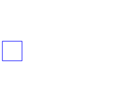
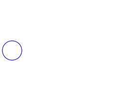

.
Modelica
.
Electrical
.
PowerConverters
.
Interfaces
.
ACDC
Information
AC to DC converter interfaces
Contents
Name
Description

ACtwoPin
Positive and negative AC pin
ACplug
AC multi phase plug

ACtwoPlug
Two AC multi phase plugs
DCtwoPin
Positive and negative DC pins
DCpin
Single DC pin
Generated at 2019-09-25T10:30:33Z by
OpenModelica 1.13.2